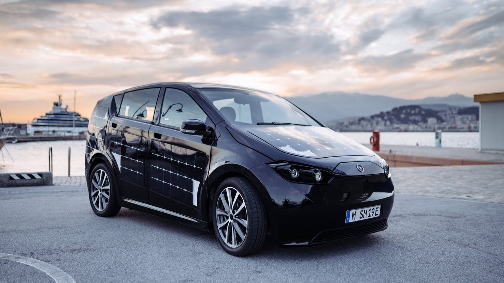
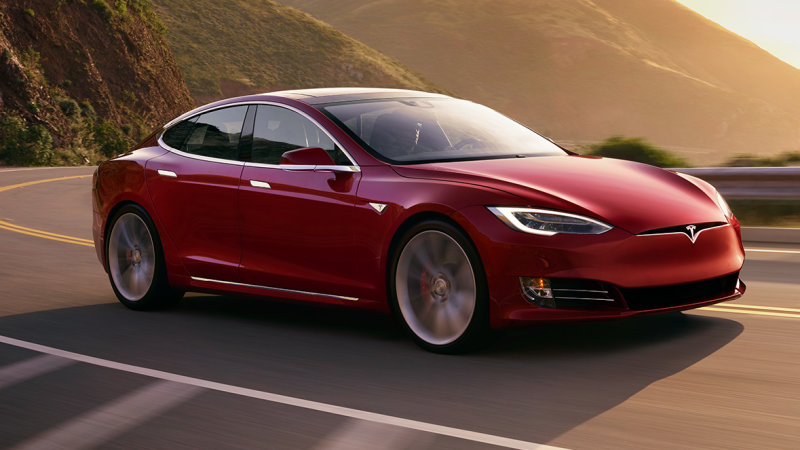
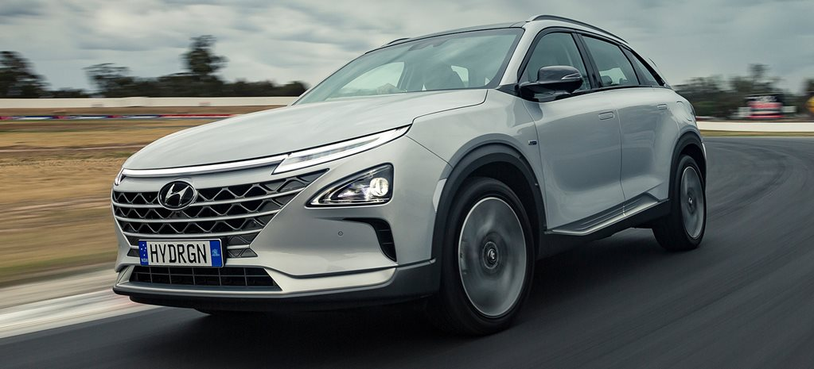
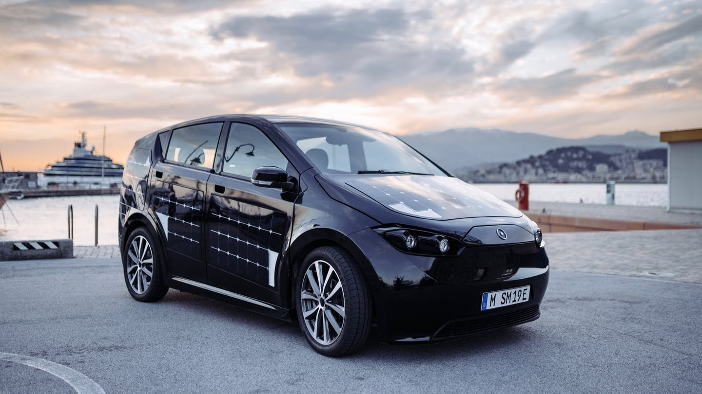
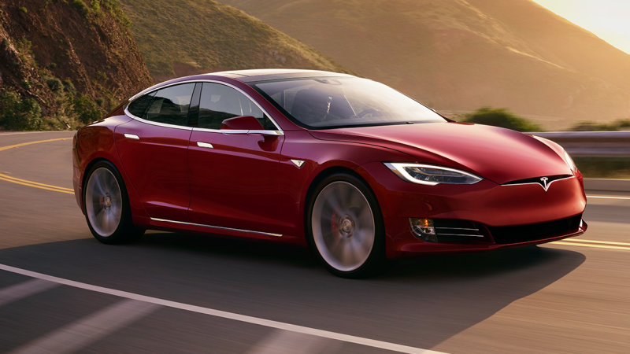
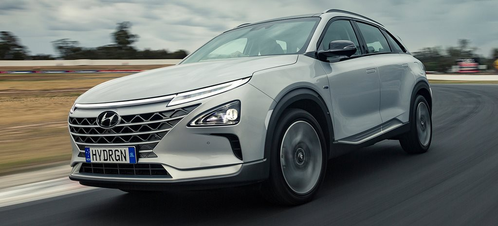

de beste elektrische auto's
#1 Beste prijs-actieradius verhouding
Hyundai Kona Electric De auto waar de wereld al jaren op wacht. Een volledig elektrische auto die lekker ver kan rijden en voor een betaalbare prijs! De koploper is: de Hyundai KONA Electric (64kWh). Uitgaande van de vanaf-prijs en de praktijk actieradius die de auto gemiddeld haalt betaal je zo'n 96 euro per kilometer actieradius die de auto heeft. De Tesla Model 3 zit ook zeker niet verkeerd met zo'n 109 euro per km actieradius die je krijgt. Duurdere EV's zitten op 200 tot zelfs 400 euro per kilometer actieradius van de auto. petje af voor Hyundai en Tesla!
De Hyundai KONA Electric 64kWh basis specificaties:
Actieradius in de praktijk: 405 km
Accucapaciteit: 64kWh
#2 De goedkoopste elektrische auto
Sono Motors Sion
Hoewel meeste elektrische auto's een stukje hoger in aanschaf zijn, zijn er ook goedkope elektrische auto's! De goedkoopste volledig elektrische personenauto die binnenkort op de markt komt is: De Sion van Sono Motors, een elektrische auto met zonnepanelen (zonneauto).
Vanaf-prijs: 25.500 euro met de hele accu erbij
Actieradius: ~250 km
80% snelladen in 33 minuten
Op de markt: Tweede helft van 2020 voor de eerste reserveringen. Let op: Deze auto is nog niet leverbaar.
#3 De snelste 100% elektrische auto
Tesla Model S 100D
100% Elektrische auto's staan bekend om hun hoge koppel, snel optrekken en sportieve rijervaring. Menig Tesla-rijder kan dat bevestigen. Maar zijn Tesla's de snelste optrekkende EV's? Ja en Nee. De snelst optrekkende vol elektrische productie auto is op dit moment de Tesla Model S P100D
Acceleratie: 0-100km/u in 2,7 sec.
Actieradius: 507 km
#4 Meeste actieradius met een elektrische auto
Hyundai NEXO#4 Meeste actieradius met een elektrische auto
In 1 keer naar Parijs of Stuttgart rijden en nog wat overhouden, kan dat? Ja zeker! De Hyundai Nexo waterstof auto is sinds 2018 op de markt en heeft tot nu toe het grootste bereik! Let wel op: Er zijn op dit moment minder dan 5 waterstof tankstations in Nederland, het is niet mogelijk om de Nexo thuis te vullen.
Hyundai Nexo specificaties:
Bereik: 650 kilometer. Dat is van Amsterdam naar Stuttgart, Zuid-Duitsland… in 1 ruk zonder bij tanken.
Prijskaartje: Net geen 70.000 euro.
Soort: Waterstof auto.
#5 De EV met de hoogste topsnelheid
Tesla Roadster 2.0
Scheuren met je elektrische auto over de Duitse Autobahn, ah jawohl das ist sehr gut! Met deze elektrische auto's laat je wat betreft topsnelheid elke andere EV in het stof. Een elektrische Porsche en een aantal Tesla's kwalificeren allemaal uitstekend met 250km/u topsnelheid. Ook hebben ze allemaal een actieradius van meer dan 400 km. Dit zijn ze:
De Tesla Model 3 Performance, Model S P100D, Model X P100D of Porsche Taycan.
Maar de echte recordhouder zal binnenkort de nieuwe Tesla Roadster 2.0 zijn, deze elektrische supercar wordt in 2020 verwacht.
Topsnelheid: Meer dan 400km/u
Acceleratie: 0 - 98km/u in 1,9 s. 0 naar 160km/u in zo'n 4,2 seconden
Actieradius: 1000km / met een big-fat 200kWh Accupakket
Prijs en levering: $200.000 (U.S.) en wordt verwacht in 2020 (eerst U.S.)
 




